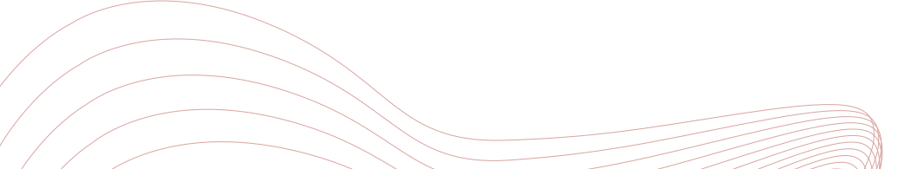
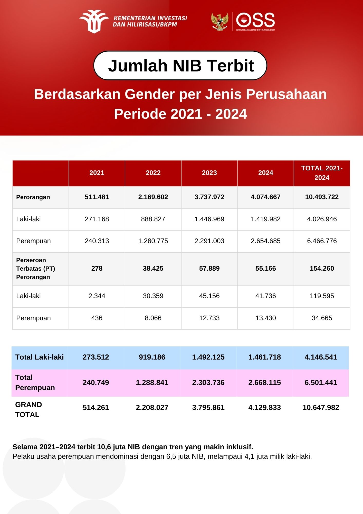
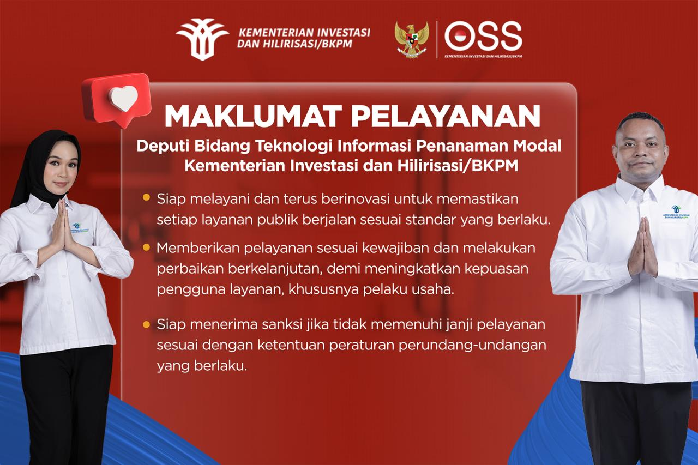

Sistem Perizinan Berusaha Terintegrasi
DPMPTSP Kabupaten Pidie
Mudah, Cepat, Tepat, Transparan, dan Akuntabel
Lancar dan aman kelola usaha dengan NIB
Nomor Induk Berusaha (NIB) adalah identitas resmi untuk memulai atau menjalankan usaha di Indonesia. Pengurusannya mudah, jadi semakin percaya diri kembangkan usaha Anda.

Sistem Perizinan Berusaha Berbasis Risiko mengelompokkan usaha jadi 4 tingkat risiko yang menentukan izin dan kewajiban usaha yang harus dipenuhi.
Berita
Lihat Selengkapnya
Partisipasi Perempuan dalam Perizinan Usaha Terus Menguat
01 December 2025

Maklumat Pelayanan: Komitmen Deputi Bidang Teknologi Informasi Penanaman Modal untuk Tingkatkan Layanan Publik
09 September 2025
Kejar Pertumbuhan Tinggi, Rosan Optimis Kontribusi Investasi Lebih Besar
28 August 2024
Pengumuman
Lihat SelengkapnyaTren Partisipasi Perempuan dalam Perizinan Berusaha Periode 2021–2025
11 May 2026
Kemudahan Baru Penerbitan KKPR Darat Bagi Usaha Mikro Cukup Isi Data dan Buat Pernyataan Mandiri di OSS
02 March 2026
Masa Penataan Izin Pengusahaan Air Tanah dan Persetujuan Penggunaan Air Tanah akan Berakhir pada 31 Maret 2026
02 March 2026